What do people think of democracy? And does it matter?
(Warning: A long and rambling graph-heavy post on public opinion by someone who has never worked with public opinion data before, and who is in addition very skeptical about the importance of public opinion for large-scale institutional outcomes. Part of this occasional series).
I’ve been playing around with the data from the latest wave of the World Values Survey, trying to figure out what people think of “democracy” in these large-scale surveys, and whether it is related to any large-scale institutional features of political systems. And I must say, I find public opinion about democracy quite puzzling.
It’s not that people don’t like democracy. On the contrary, public opinion surveys like the World Values Survey or the various regional “Barometer” polls (Latinobarometer, Arab Barometer, Asian Barometer, Afrobarometer) tend to consistently find that people really like the idea of democracy; asking about democracy is like asking about motherhood. Consider the figure below, which plots the range of responses in the sixty countries surveyed by the WVS at various times between 2011 and 2014 to a question asking about people’s opinion of “having a democratic political system”:
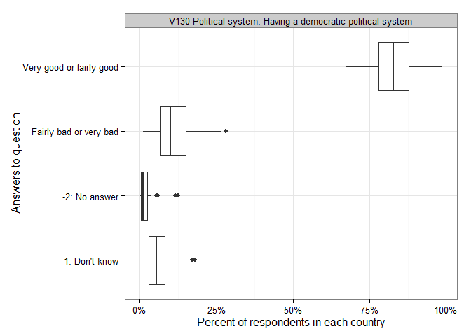
In most of these countries (including many countries most people would classify as “authoritarian”), more than 75% of the population says that having a democratic system is a “very good” or a “fairly good” idea, while only small minorities claim democracy is a “very bad” or a “fairly bad” idea. In the modal country, in other words, large majorities are “pro-democracy” in some abstract sense. Nevertheless, these same majorities are not always very discriminating about what they consider “good” political systems. In some countries, large numbers of people agree both with the idea that democracy is a good form of government, and that having the army rule, or having a strong leader “that does not bother with parliament and elections” is also a good thing.
The figure below compares answers to the question of whether respondents consider “having a democratic system” a good idea with their answers to questions about other modes of political decisionmaking. It is ordered according to whether the pattern of responses in a country is similar to that found in New Zealand (the first country at the top left). New Zealand is a good reference country because (besides the fact that I live there) the pattern of belief in NZ is consistently “pro-democracy”: democracy is considered to be good by large majorities, while army rule, expert rule, and strong leader rule are not so considered, though expert rule is not altogether discounted.1 Many countries display a similar pattern of responses (not just “Western” countries; see, e.g., Thailand, where democracy is greatly preferred to army rule or expert rule, even if a substantial minority does evaluate these alternatives positively, reflecting Thailand’s persistent political conflicts), but in others views are more confusing. For example, majorities of people in India, Mexico, and Egypt seem to think all political systems are a great idea; army rule, democracy, expert rule, it’s all good.2
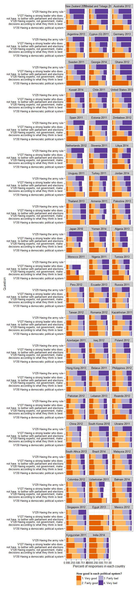
Indeed, about 36% of all respondents in India give positive evaluations (answers of “very good” or “fairly good”) to all hypothetical political systems, while less than 1% of respondents are what we might call “principled democrats,” evaluating democracy positively while negatively assessing the remaining options, as we can see in the figure below.3 By contrast, around 47% of respondents of respondents in Sweden are “principled democrats,” while only around 4% are what we might call “enthusiasts about everything.” (I’m not sure why people in India seem to be so enthusiastic about all the options here; perhaps this is some weird survey artifact. Readers from India might help me out here?).
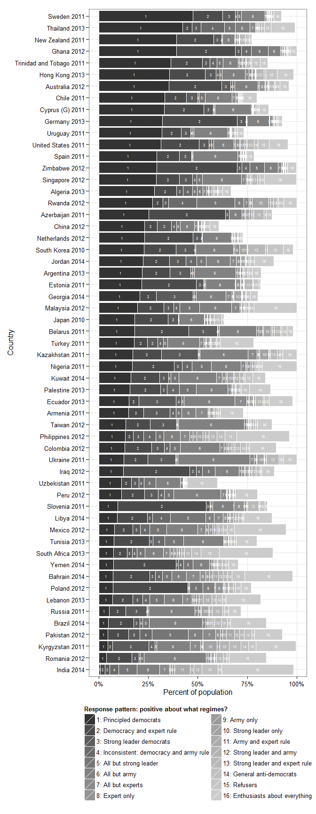
The WVS also asks a number of questions about whether people consider various things “essential” to democracy, ranging from classic liberal ideas (free elections, equality under the law, civil rights) to economic and social outcomes (income equality, unemployment help, progressive taxation), to “antiliberal” ideas (“religious authorities interpret the laws,” “army takes over if the government is incompetent”). And though many people all over the world tend to agree that elections and other liberal freedoms are essential to democracy, there are clear differences in public opinion about what other things they also consider essential. The figure below is again arranged with New Zealand at the top, followed by those countries whose pattern of responses is most similar to New Zealand:
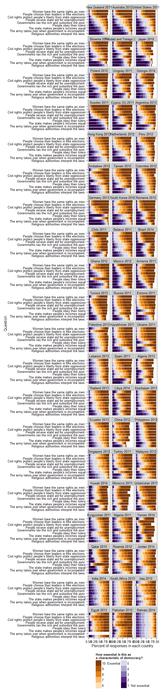
Public opinion about democracy in the countries at the top of the figure is recognizably “liberal”: free elections, women’s rights, and civil rights are seen as pretty important to democracy by large numbers of people, while economic equality and social security are seen as less important, and “antiliberal” ideas receive little support (though not zero support! One gets the impression that some respondents are just trolling the interviewers, but who knows; survey respondents are under no obligation to be consistent). By comparison, public opinion about democracy in Russia or Kazakhstan (and in most of the post-Communist countries in the sample) tends to emphasize economic equality and social security more (though civil rights and free elections remain important), while in Yemen or Pakistan just about everything in the list is seen as essential to democracy (including antiliberal ideas), and in Bahrain just about everything is seen as unimportant (another puzzling pattern!).
Aggregate public opinion conceals much variation among individual responses, of course. We might think of individual responses as divided into different types, depending on how much they emphasize different ideas – liberal, egalitarian, and antiliberal – relative to some baseline when answering questions about what ideas they think are “essential” to democracy.4 In particular, we can distinguish between relative liberal democrats (people who consider free elections and individual rights more important than the average respondent in all countries, while de-emphasizing egalitarian and antiliberal ideas), relative social democrats (people who associate both liberal and “economic” ideas with democracy), relative egalitarian democrats (people who associate democracy primarily with “economic” ideas), antiliberals (people who associate democracy primarily with anti-liberal ideas, like “the army takes over when the government is incompetent”), antiegalitarians (people who associate democracy with everything except economic equality), enthusiasts (people who associate democracy with everything), and refusers (people who do not think any of the options on offer in the survey is especially essential). The figure below is ordered according to the percentage of respondents who express relatively liberal and liberal egalitarian views of democracy:

Perhaps unsurprisingly, large numbers of people in “Western” countries – Germany, Sweden, New Zealand, etc. – express views of democracy that are “liberal” or “liberal egalitarian” (relative to the world average), though proportions of “principled” liberals and “egalitarian” liberals vary (Germany contains a very large number of “egalitarian” liberals; New Zealand and the United States do not). Overall, however, pure liberal views are relatively uncommon; indeed, in some countries (Bahrain, South Africa) there are basically no detectable relative liberals (egalitarian or otherwise), while in many countries (e.g, Qatar, Iraq) large numbers of respondents emphasize both economic equality and anti-liberal ideas as essential components of democracy. This is not to say that in these societies nobody cares about free elections or civil rights; but many people there appear to see no contradiction between thinking that free elections and civl rights are important to democracy (even if not the most essential thing), and thinking that democracy also involves (perhaps more essentially) having a role for religious authorities in politics, or for the army when the elected government appears to fail.
Some variation is to be expected given that people in different countries may use different baselines when asked to rank ideas along a 1-10 scale (what a “ten” means in Sweden may not be the same as what it means in Bahrain, on average), but still, the differences are striking, and suggestive of “cultural” clustering among conceptions of democracy. And indeed, using a simple graph representation of the similarities between patterns of responses among countries,5 and a community discovery algorithm, we find between 3 and 7 clusters (depending on the algorithm used), one of which typically corresponds to the “Western” countries plus Japan and South Korea, and another to the Post-socialist world (Soviet countries plus China plus a few others). For example, the figure below displays five clusters, arranged by color according to the average similarity of the conception of democracy of countries in the cluster to New Zealand; the labels in the legend show a representative country in the cluster.
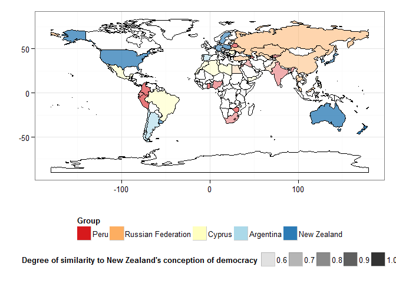
The countries in the dark blue group (labeled “New Zealand”) show “liberal” patterns of responses, and contain most of the “Western” democracies, plus Japan, South Korea, and Uruguay. The countries in the orange (“Russia”) group contain most of the post-socialist countries, plus a few others (Egypt, Malaysia). Countries in light blue comprise an “Iberoamerican” cluster (Spain plus Argentina and Chile) that is pretty similar to the “Western Europe” cluster; countries in dark red are pretty similar to the post-socialist countries, though they tend to have more “illiberal” conceptions of democracy. One could easily tell a story here about how socialization in formerly communist countries tended to associate democracy with the egalitarian values of the socialist project, which, though denied in practice in some ways, seem to have been accepted by the vast majority of the population. And a contrasting story could be told about the “Western” conception of democracy, which more strictly separates egalitarian “outcomes” from democracy as such. I am less sure about the other, more illiberal clusters; I suppose one could tell a story about the importance of “religious authority” in some of them, but it certainly would not fit all countries. Perhaps the most obvious feature of the “Cyprus” (light yellow) and “Peru” (dark red) clusters is that they seem to gather many the countries of what was formerly called the “third world,” which suggests a better division into “first,” “second,” and “third” world conceptions of democracy. These conceptions, though not wholly distinct, do suggest that people’s views of democracy were shaped in some indirect way by both development patterns and the great ideological conflicts of the 20th century. People expect different (and sometimes contradictory) things of democracy in different parts of the world; and these expectations appear to have been partly shaped by the institutional history of their societies.
Nevertheless, there is little direct correlation between public opinion about democracy (“democratic values,” if you will) and “actual” measures of democracy (as devised by political scientists). Ronald Inglehart (one of the principal investigators for the WVS) has argued that the number of people who “like” democracy or find it important for their country is essentially uncorrelated with standard measures of democracy (he uses Freedom House, but the point holds for other measures, like Polity IV). Talk is cheap, and “liking” democracy has little to do with “having” a standardly democratic political system. Instead, he suggests, democracy is associated with what he and his collaborators call “post-materialist” values.
Inglehart is certainly right about the lack of correlation between “liking” democracy (or even considering it important) and standard measures of democracy (as we can see below); but though the measures of post-materialism included with the WVS do show some correlation with standard measures of democracy, this is not always very high. The percentage of people who give “liberal” answers to questions about the essential characteristics of democracy (relative to the world average) displays a higher correlation with “standard” measures of democracy than almost anything else, including “post-materialist” values:
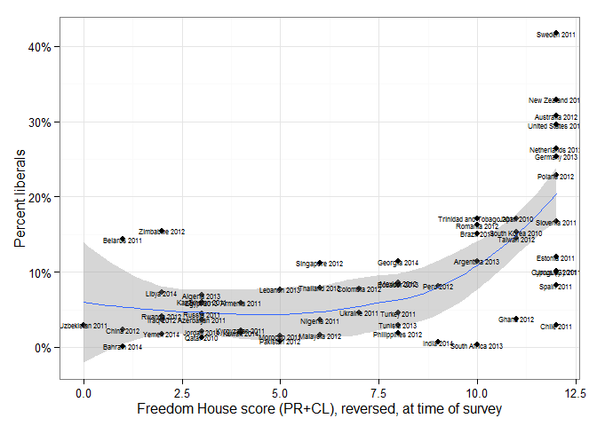 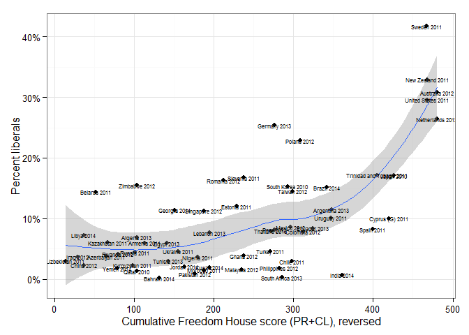 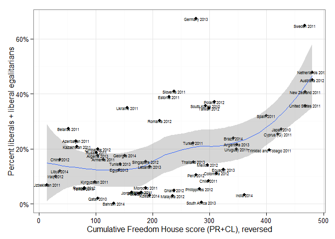 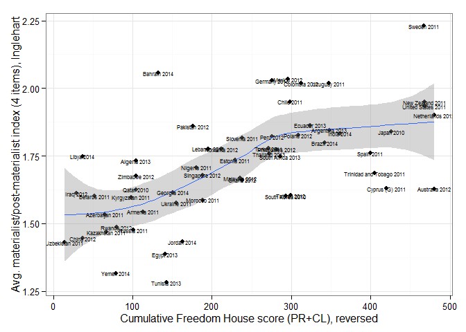 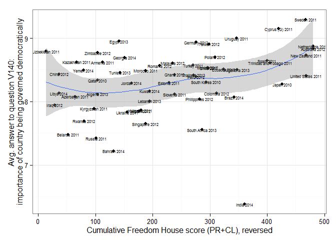
I do not think this says much about whether a certain combination of views about democracy is needed to produce or sustain democracy; more likely, the process of socialization in countries with “consolidated” liberal democratic institutions, like New Zealand, more clearly differentiates “democracy” from other alternatives, and more clearly associates it with a specific constellation of institutions, than elsewhere, where democracy might be a bit of an empty signifier, ready to be filled with whatever content political entrepreneurs manage to pour into it. In other words, I find it more plausible that liberal democratic institutions tend to produce liberal democrats than the reverse. I also do not find Inglehart et al.’s argument for the importance of post-materialist values to the long-run stability of democracy convincing; though there is certainly a correlation between these post-materialism indexes and some measures of democracy (not all), some careful statistical work suggests the relationship goes away when using other measures of democracy and accounting for reverse causation (from institutions to values). The sorts of aspirational values that get expressed in surveys (which may not be ultimately reflective of deep commitments to defend or promote certain institutions) seem more likely to be shaped by institutions than the other way around; but perhaps that is only my prejudices speaking.
One piece of evidence for this “primacy of institutions” thesis, it seems to me, is the general lack of correlation between responses to questions about the actual degree of democracy in a respondent’s country and standard measures of democracy. “Expert” and “popular” assessments of democracy often diverge radically, suggesting that what people come to consider “democratic” is shaped by prevailing regimes more than the other way around:
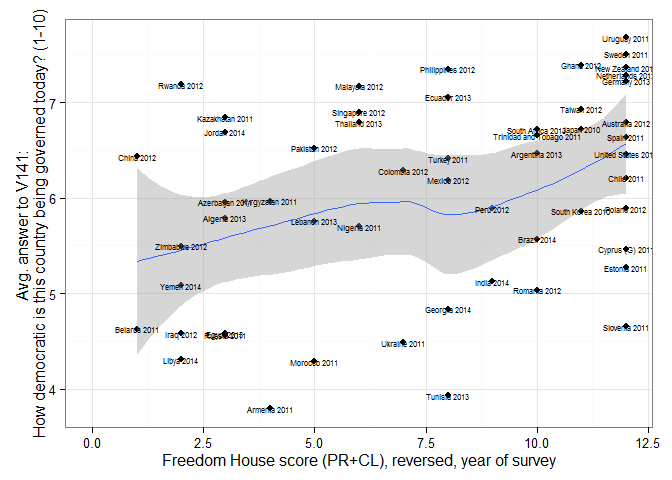 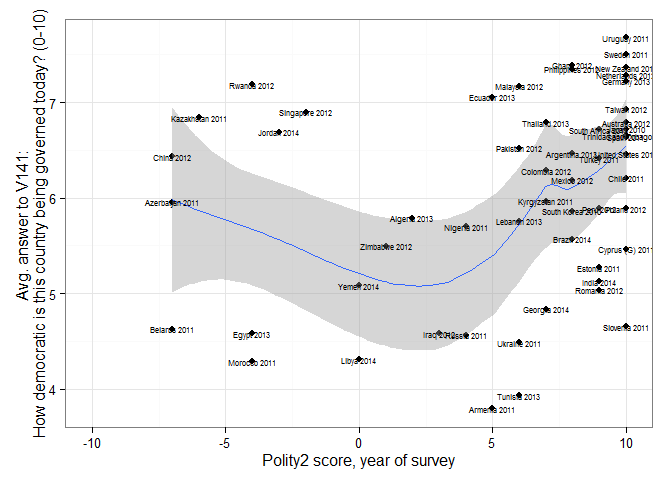 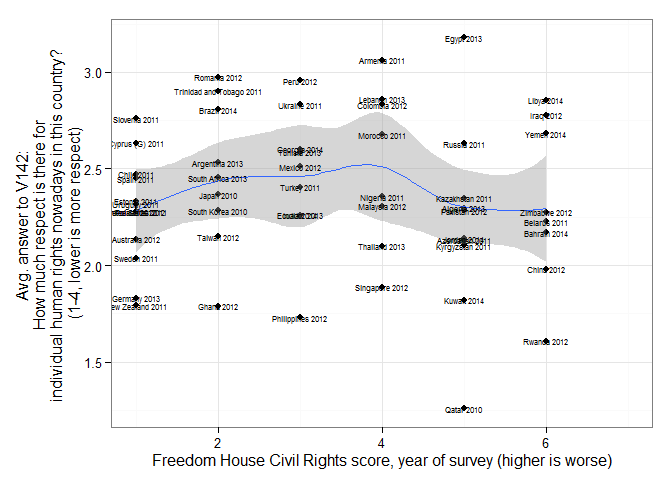 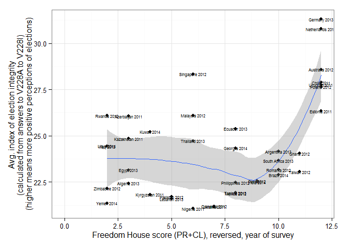 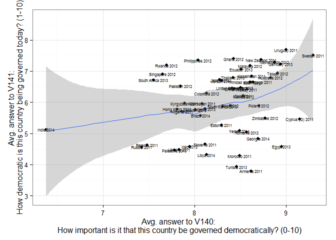
Again, these differences are not altogether surprising; different people will answer “rating” questions like these from different baselines, and their responses may anyway be affected by such factors as how well they think the country is doing, what political events are in the news, and perhaps even their mood or the weather at the time of the interview. Someone with more time and training than me could probably figure out how to calibrate these responses better. Yet there are still some interesting patterns worth noticing. For example, there seems to be something of a “sour grapes” effect: in some countries where people rate the level of democracy lower, they also tend to give lower average answers to the question of how important it is that their country be ruled democratically. Moreover answers about more specific aspects of political life, such as the quality of elections, tend to be reasonably well correlated with standard measures of democracy; people in Rwanda, for example, are surprisingly upbeat when they answer the question of how democratically they think their country is ruled (perhaps due to the successes of Rwandan economic development under Kagame), but (on the aggregate at least) they have fewer illusions about their electoral process, which they accurately judge is hardly a perfect model of fairness. (The one obvious outlier is Singapore, where people express great confidence in the freedom and fairness of their elections while being given a low FH/Polity2 score).
The specific answers to questions about elections are interesting in themselves (it’s too bad it was only asked in 40 out of the 60 countries in this wave of the WVS). The figure below is arranged from “freest” to “least free” (by the total Freedom House score), starting with Australia and Chile:
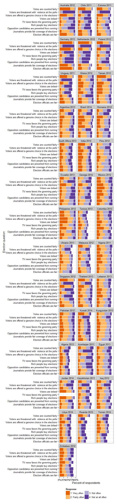
Countries at the very top display high levels of trust in elections: most people think votes are counted fairly, election officials are fair, voters are given a genuine choice at the polls, opposition politicians are not prevented from running, there’s little violence at the polls, and media coverage is reasonably unbiased. (The Netherlands and Germany are model countries here; people there really trust in their electoral process!). As we go down the list, however, we find countries where trust in the voting process is mingled with distrust at the media and the rich (e.g., Taiwan and Brazil), and eventually countries where opinion is highly polarized (e.g., Pakistan, Zimbabwe, Egypt, or Nigeria, where significant numbers think votes are counted fairly and significant numbers think they aren’t). Only in a few countries do we find something like a generalized distrust of the electoral process by majorities of those surveyed; more usually, different groups in the population fiercely disagree about the fairness of the electoral process (as in Venezuela today – unfortunately not included in this WVS wave).This is one more reason to think that elections do not necessarily “legitimate” governments; if half your population strongly doubts their fairness, and the other half strongly supports it, the election is going to be experienced quite differently by each side.
The nine items on elections in the survey measure, as far as I can tell, four dimensions of the electoral process: fairness of the election itself (electoral officials are fair, votes are counted fairly, voters are threatened with violence at the polls); fairness of the media (TV news coverage, journalists); extent of choice (voters are offered a genuine choice, opposition politicians are prevented from running); and perceptions of problematic money in politics (voters are bribed, rich people buy elections). We can thus use an index of perceptions of the fairness of each of these components of the electoral process to construct a measure of polarization. The figure below is thus arranged according to one such measure, from the most polarized society (Zimbabwe, where the fairness of every component of the electoral process appears to be fiercely disputed, with approximately equal numbers of people trusting and distrusting each of them) to the least polarized (Germany, where there seems to be great consensus that every component of the electoral process is fair):
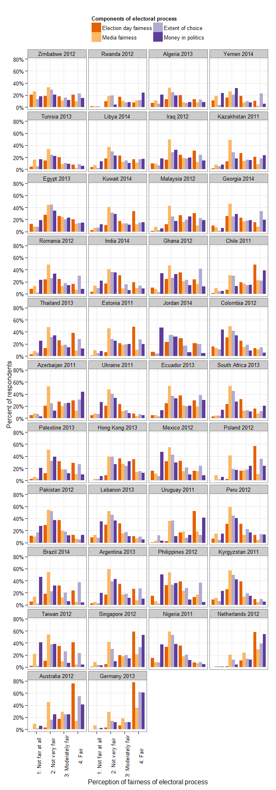
Perhaps the most striking thing we can observe in this graph is how much people distrust the media’s political role in most societies; almost everywhere the media component has the largest number of people expression reservations about its fairness during elections. And people in many societies generally considered to be democratic (e.g, Peru, Argentina, South Africa) express much distrust of almost every component of the electoral process; in Nigeria there almost seems to be a general consensus that everything about the electoral process is unfair. Yet there is a strong correlation between the degree to which perceptions of election day fairness are polarized and the degree to which the country has been democratic, by conventional measures; we might say that the mark of a consolidated democracy (by conventional measures) is simply that people in general agree that election day is “fair,” regardless of other disagreements:
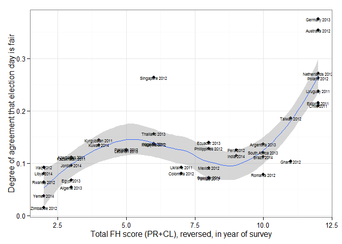 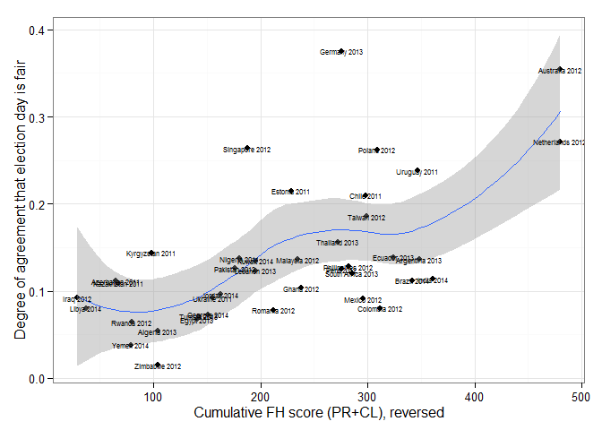 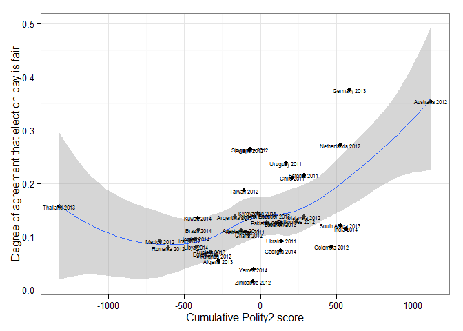 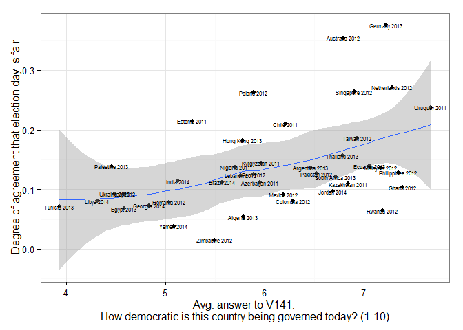
Indeed, the more agreement there is on election day fairness, the higher people rate the degree of democracy in their country:
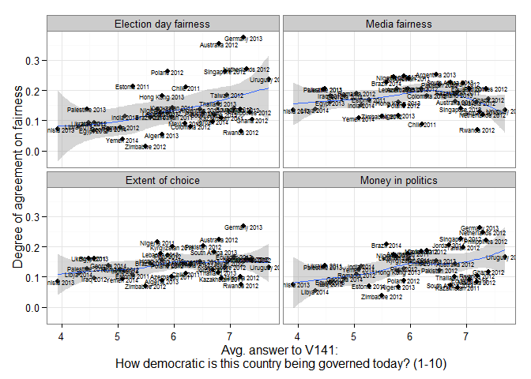
If I may speculate here, elections only seem to legitimate governments – ensuring some degree of institutional stability – when people already agree that they are fair. They do not have any magic “legitimating” powers if people do not already agree on their fairness; and whether people agree on the fairness of elections is only in part a function of their objective fairness. Deep conflicts in society may “spill over” to the fairness of elections.
All code for the figures in this post is available in this GitHub repository. You will also need the World Values Survey data file (sixth wave, 2011-2014), and the latest data from Freedom House (helpfully converted into an R-friendly CSV file by Jay Ulfelder here).
For the details of how the measure of similarity was calculated, take a look at the code for this post. Essentially, I created a matrix of the proportions of the population giving each answer in each country, and used a Gower distance measure to calculate which countries were similar to which.↩
Egyptians weren’t asked about army rule in 2013. Perhaps the question was regarded as too politically sensitive in the circumstances.↩
The figure excludes Egypt, Morocco, and Qatar, where some of these questions weren’t asked. There’s a fair amount of non-response to these questions in many countries; that’s the reason why the bars in the figure don’t go all the way to the right hand side.↩
This can be done in different ways, but below I simply categorize a response as emphasizing one of these ideas if it scores higher than the world average for the relevant items. More precisely, I combine the scores for the three items measuring each of the main ideas, and categorize a response as emphasizing that idea if it this number is larger than average across all countries. “Liberal” ideas are measured by the questions asking about how essential women’s rights, free elections, and civil rights are to democracy; “egalitarian” ideas are measured by the questions asking about how essential income equality, state provision of unemployment benefits, and taxation of the rich and subsidies to the poor are to democracy; and “antiliberal” ideas are measured by the questions asking about about how essential obedience to the state, the army taking over if the government is incompetent, and a role for religious authorities interpreting the laws are to democracy. All of these are, of course, highly imperfect as measures of these ideas; but this is in the nature of large-scale survey research.↩
A weighted undirected graph where edge strength is the measure of similarity between any two countries in their response patterns to all of the nine questions concerning the essential characteristics of democracy. See the code for this post for more details on its construction.↩